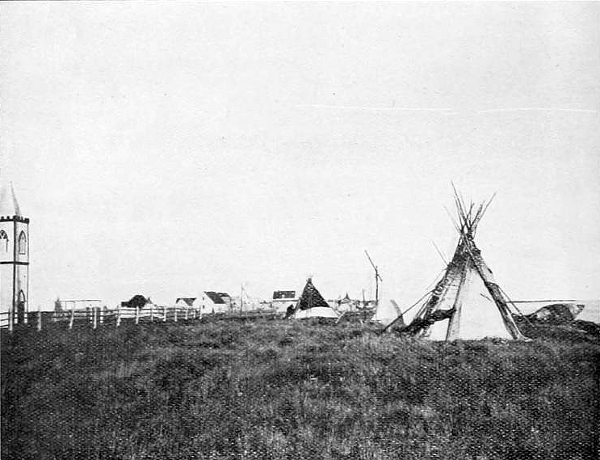
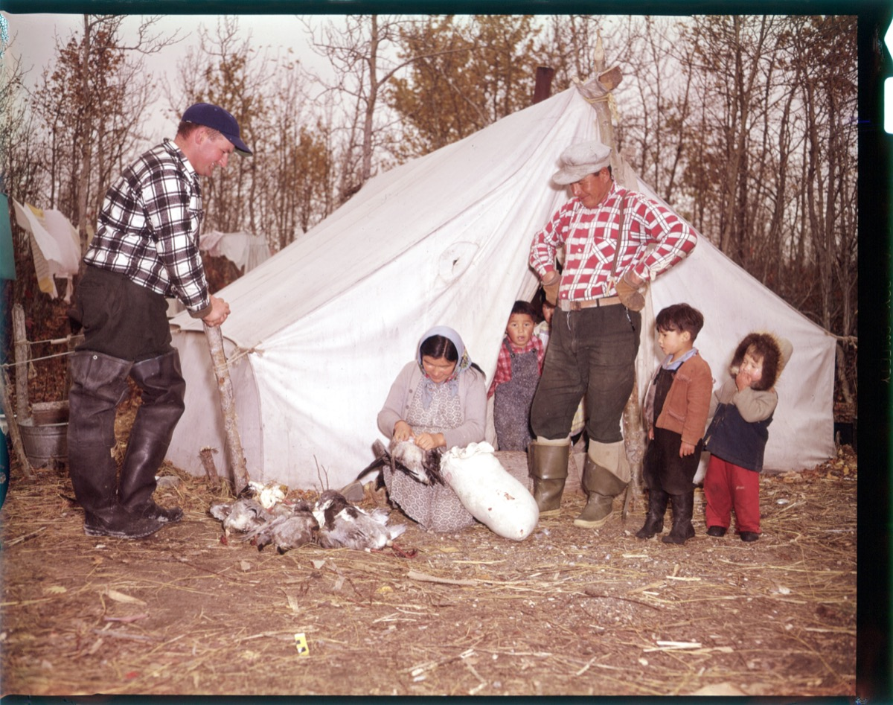

Omushkego
The People of the Muskeg
Kashechewan is an Omushkego (Swampy Cree) community — one of the Cree peoples of the lowlands along the Albany River and the western shore of James Bay. For generations, our lives have been shaped by the muskeg, the rivers, and the changing seasons of the subarctic.1
Knowledge of the land — how to travel it, hunt on it, and live well with it — is passed down within families and carried in the Cree language. That relationship with the land remains at the heart of who we are.


Niska — the goose
The goose hunt
Each spring and fall, families of Kashechewan travel out on the land for the niska (goose) hunt. The goose harvest is far more than a source of food — it is a season of teaching, where language, skills, kinship, and respect for the land are shared between generations.2
Land-based practices like the goose hunt are widely recognized for their role in the well-being of Omushkego communities, connecting people to place, to family, and to a way of life carried forward from our ancestors.2
The Cree language
The people of Kashechewan speak Swampy Cree, part of the Cree language continuum spoken across the subarctic. For many residents, Cree is a first language — spoken at home and used every day.3 The language is a primary carrier of the community's culture: it holds oral histories, place names, teachings, and the knowledge that ties each generation to the last.
The Cree language carries our history, our land, and our relationships. To speak it is to keep our ancestors' knowledge alive. — A reflection on the role of Cree in Omushkego community life
A few words
Wachiya
Hello / welcome
Niska
Goose
Kishechiwan
“Where the water flows fast”
Sources & citations
- “Kashechewan First Nation.” Wikipedia; and “Mushkegowuk.” Mushkegowuk Council. mushkegowuk.ca
- “Indigenous Land-Based Approaches to Well-Being: The Niska (Goose) Harvesting Program in Subarctic Ontario, Canada.” PMC / National Library of Medicine. ncbi.nlm.nih.gov/pmc/articles/PMC9958717
- “Swampy Cree language.” Wikipedia. en.wikipedia.org/wiki/Swampy_Cree_language